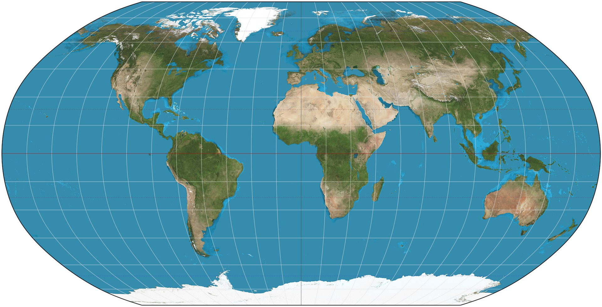

Can you match neurotoxicants to sources of exposure?
Instructions
Below the map, click on a card from each row to try a match between a neurotoxicant and a possible or common source of exposure for chidren or mothers. A correctly matched pair will be highlighted green. The background colors of cards are grouped by the broad category they belong to: HEAVY METALS (yellow), INDUSTRIAL CHEMICALS & PESTICIDES (pink), and ENDOCRINE DISRUPTORS (blue).
To learn more about the various neurotoxicants, hover over pins on the map for more context, including evidence from studies described in Environmental Neurotoxicants and Developing Brain (Miodovnik 2011). The location of a pin is based on the country where one of the mentioned studies took place.
Note that the evidence popups and the environmental sources cards are
not meant to provide exhaustive lists. Likewise, the 9 "neurotoxicants"
below are only more well-known candidates for negatively impacting brain
development early in life and for associations with neuropsychological,
cognitive, or behavioral issues. But, as Miodovnik writes,
"Only about 200 chemicals out of more than 80,000 registered with the
United States Environmental Protection Agency have undergone extensive
neurotoxicity testing, and many chemicals found in consumer goods are
not required to undergo any neurodevelopmental testing."

Resources
WORLD MAP IMAGE: By Strebe - Own work, CC BY-SA 3.0, Link"Environmental Neurotoxicants and Developing Brain", link: https://onlinelibrary.wiley.com/doi/10.1002/msj.20237
The following studies are all cited in Miodovnik 2011, but I had to reference some of the original sources for information about where the studied cohorts were located:
"Phthalates Exposure and Attention-Deficit/Hyperactivity Disorder in School-Age Children", link: https://doi.org/10.1016/j.biopsych.2009.07.034
"Relationship between Environmental Phthalate Exposure and the Intelligence of School-Age Children", link: https://ehp.niehs.nih.gov/doi/10.1289/ehp.0901376
"Prenatal Exposure to Organohalogens, Including Brominated Flame Retardants, Influences Motor, Cognitive, and Behavioral Performance at School Age", link: https://ehp.niehs.nih.gov/doi/10.1289/ehp.0901015
"Prenatal bisphenol A exposure and early childhood behavior", link: https://pubmed.ncbi.nlm.nih.gov/20049216/